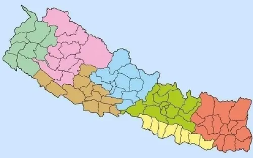

Nepal, officially the Federal Democratic Republic of Nepal, is a landlocked country in South Asia. It is mainly situated in the Himalayas, but also includes parts of the Indo-Gangetic Plain. It borders the Tibet Autonomous Region of China to the north, and India to the south, east, and west, while it is narrowly separated from Bangladesh by the Siliguri Corridor, and from Bhutan by the Indian state of Sikkim. Nepal has a diverse geography, including fertile plains, subalpine forested hills, and eight of the world's ten tallest mountains, including Mount Everest, the highest point on Earth. Kathmandu is the nation's capital and the largest city. Nepal is a multi-ethnic, multi-lingual, multi-religious and multi-cultural state, with Nepali as the official language. 
Ancient History
By 55,000 years ago, the first modern humans had arrived on the Indian subcontinent from Africa, where they had earlier evolved. The earliest known modern human remains in South Asia date to about 30,000 years ago.The oldest discovered archaeological evidence of human settlements in Nepal dates to around the same time.
After 6500 BC, evidence for the domestication of food crops and animals, construction of permanent structures, and storage of agricultural surplus appeared in Mehrgarh and other sites in what is now Balochistan.These gradually developed into the Indus Valley civilisation, the first urban culture in South Asia.Prehistoric sites of palaeolithic, mesolithic and neolithic origins have been discovered in the Siwalik hills of Dang district. The earliest inhabitants of modern Nepal and adjoining areas are believed to be people from the Indus Valley civilisation. It is possible that the Dravidian people whose history predates the onset of the Bronze Age in the Indian subcontinent (around 6300 BC) inhabited the area before the arrival of other ethnic groups like the Tibeto-Burmans and Indo-Aryans from across the border.By 4000 BC, the Tibeto-Burmese people had reached Nepal either directly across the Himalayas from Tibet or via Myanmar and north-east India or both. Stella Kramrisch (1964) mentions a substratum of a race of pre-Dravidians and Dravidians, who were in Nepal even before the Newars, who formed the majority of the ancient inhabitants of the valley of Kathmandu.
Want to learn more: click here